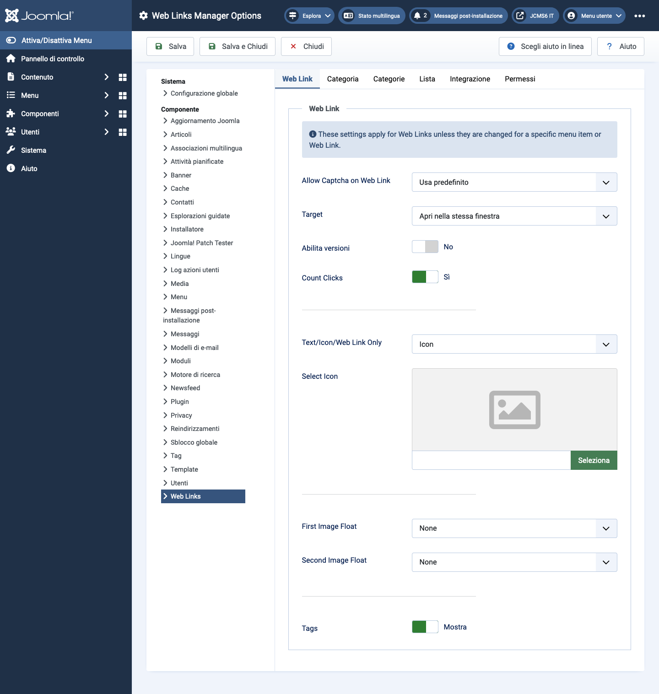

Joomla Help Screens
Opzioni di Collegamenti Web
Descrizione
La configurazione delle Opzioni dei Link Web consente di impostare i parametri utilizzati globalmente per tutti gli elementi di menu dei link web.
Elementi Comuni
Alcuni elementi di questa pagina sono trattati in articoli di Aiuto separati:
Come Accedere
- Seleziona Componenti -> Weblink -> Link dal menu Amministratore. Poi...
- Seleziona il pulsante Opzioni dalla barra degli strumenti.
Screenshot

Scheda Collegamento Web
- Permetti Captcha sul Collegamento Web Seleziona il plugin captcha che verrà utilizzato nel form di invio del collegamento web. Potrebbe essere necessario inserire le informazioni richieste per il tuo plugin captcha nel Plugin Manager. Se è selezionato 'Usa predefinito', assicurati che un plugin captcha sia selezionato nella Configurazione Globale.
- Target Finestra del browser di destinazione quando il link viene selezionato.
- Conta Click Se Sì, il numero di volte in cui il link è stato cliccato verrà registrato.
- Solo Testo/Icona/Collegamento Web Mostra un testo, un'icona o nulla con il Collegamento Web. Il predefinito è Icona.
- Seleziona Icona Questo ti consente di selezionare un file immagine da utilizzare come icona predefinita per i collegamenti web. Quando clicchi sul pulsante Seleziona, si apre una finestra modale che ti permette di navigare tra i file immagine del tuo sito.
- Immagine Fluttuante Dove visualizzare l'immagine sulla pagina.
- Mostra Tag Mostra o nascondi i tag del feed.
Scheda Categoria
Le opzioni Categoria controllano come verranno mostrati i collegamenti web quando si naviga in profondità in una categoria per visualizzare i suoi link.
- Scegli un layout Seleziona il layout predefinito da mostrare quando clicchi su un collegamento di Categoria. Se crei un layout alternativo per un layout di categoria, puoi selezionarlo come predefinito.
- Titolo della Categoria Mostra o nascondi il titolo della categoria.
- Descrizione della Categoria Mostra o nascondi la descrizione della categoria.
- Immagine della Categoria Mostra o nascondi l'immagine della categoria.
- Livelli di Sottocategoria Quanti livelli di sottocategorie mostrare quando si visualizza una vista di categoria.
- Categorie Vuote Mostra o nascondi le categorie che non contengono alcun elemento o sottocategorie.
- Descrizioni delle Sottocategorie Mostra o nascondi le descrizioni delle sottocategorie che vengono visualizzate.
- # Collegamenti Web Mostra o nascondi il numero di collegamenti web in ogni categoria.
- Mostra Tag Mostra o nascondi i tag per una singola categoria.
Scheda Categorie
Queste impostazioni si applicano alle Opzioni delle Categorie di Collegamenti Web a meno che non vengano modificate per un elemento di menu specifico.
- Descrizione della Categoria di Livello Superiore Mostra o nascondi la descrizione della categoria di livello superiore.
- Livelli di Sottocategoria Quanti livelli nella gerarchia mostrare.
- Categorie Vuote Mostra o nascondi le categorie che non contengono elementi e sottocategorie.
- Descrizioni delle Sottocategorie Mostra o nascondi la descrizione di ogni sottocategoria.
- # Collegamenti Web Mostra o nascondi il numero di collegamenti web in ciascuna categoria.
Scheda Layout delle Liste
Queste impostazioni si applicano alle Opzioni delle Liste di Collegamenti Web a meno che non vengano modificate per un elemento di menu specifico.
- Campo Filtro Il Campo Filtro crea un campo di testo in cui un utente può inserire un valore da utilizzare per filtrare i collegamenti web mostrati nella lista.
- Nascondi: Non mostrare un campo filtro.
- Titolo: Filtra per il titolo del collegamento web.
- Autore: Filtra per il nome dell'autore.
- Visite: Filtra per il numero di visite dei collegamenti web.
- Selezione Visualizzazione Mostra o nascondi il controllo Seleziona # che consente all'utente di selezionare il numero di elementi da mostrare nella lista.
- Intestazioni della Tabella Mostra o nascondi un'intestazione sopra la tabella dei collegamenti web.
- Descrizione dei Collegamenti Mostra o nascondi la descrizione del collegamento web.
- Visite Nascondi o mostra il numero di volte in cui questo collegamento web è stato accesso.
Scheda Integrazione
Queste impostazioni determinano come il Componente Collegamenti Web si integrerà con altre estensioni.
- Collegamento al Feed RSS Mostra o nascondi gli URL dei collegamenti al feed. Un collegamento al feed verrà mostrato come un'icona del feed nella barra degli indirizzi della maggior parte dei browser.
- Rimuovi ID dagli URL Sì o No.
- Modifica Campi Personalizzati Sì o No.
Suggerimenti
- Se sei un utente principiante, puoi semplicemente mantenere i valori predefiniti finché non impari di più sull'utilizzo delle opzioni globali.
- Se sei un utente avanzato, puoi risparmiare tempo creando dei buoni valori predefiniti qui. Quando configuri le voci di menu e crei collegamenti web, sarai in grado di accettare i valori predefiniti per la maggior parte delle opzioni.
- Tutti i valori impostati qui possono essere sovrascritti a livello di voce di menu, categoria o collegamento web.
Tradotto da openai.com